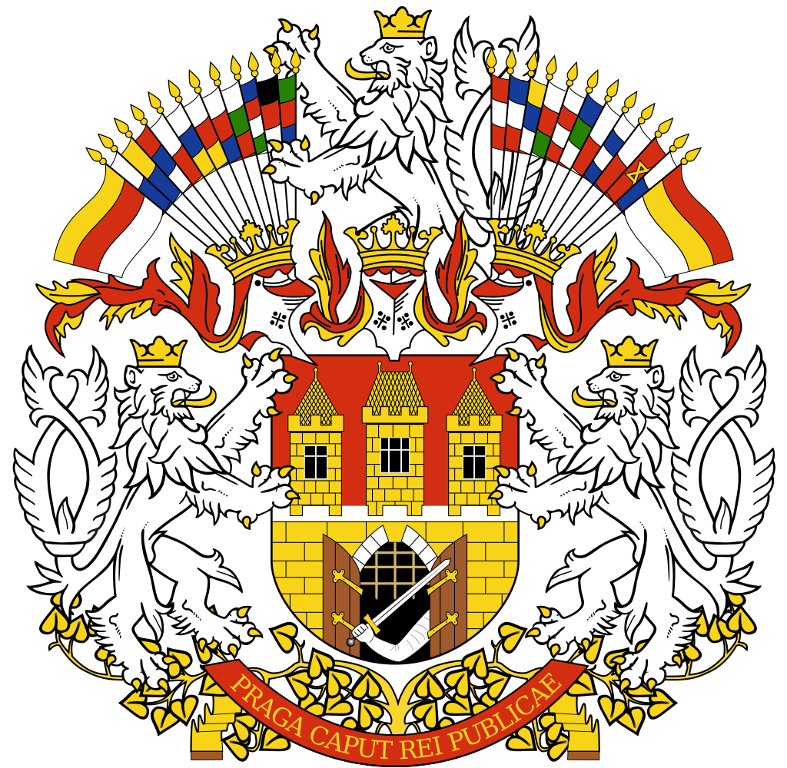

Η Τσεχία βρίσκεται στην κεντρική Ευρώπη και συνορεύει με την Πολωνία, Γερμανία, Αυστρία και Σλοβακία. Η Πράγα, είναι η πρωτεύουσα και μεγαλύτερη πόλη της Τσεχίας. Χτισμένη στον ποταμό Μολδάβα (Vltava), στην κεντρική Βοημία, έχει 1.268.796 κατοίκους (απογραφή 2011).
Αναπτύσσεται εκατέρωθεν του ποταμού Μολδάβα, με τη φημισμένη γέφυρα του Καρόλου να κυριαρχεί μεταξύ πολλών ακόμη που ενώνουν τα δύο κομμάτια γης. Στην ανατολική πλευρά βρίσκεται η Παλιά Πόλη («Στάρε Μιέστο»), με την εβραϊκή συνοικία βορειότερα και τη Νέα Πόλη («Νόβε Μιέστο»: επέκταση επί Καρόλου Δ’ τον 14ο αι.) προς τα νότια.
Αποκαλείται επίσης «η χρυσή πόλη» και «μητέρα των πόλεων». Από το 1992, το ιστορικό κέντρο της Πράγας ανήκει στον κατάλογο μνημείων παγκόσμιας κληρονομιάς της UNESCO.
Η Τσεχική γλώσσα (τσεχικά: český jazyk, čeština) είναι μία από τις Δυτικές Σλαβικές γλώσσες, μαζί με τα Σλοβακικά, Πολωνικά, Πομερανικά και τα Σορβικά. Ομιλείται από τους περισσότερους κατοίκους της Τσεχικής Δημοκρατίας και από Τσέχους σε όλο τον κόσμο (εκτιμάται πως διαθέτει συνολικά 12 εκατομμύρια ομιλητές). Τα Τσεχικά είναι εξαιρετικά συγγενή των Σλοβακικών και, σε μικρότερο βαθμό, των Πολωνικών.
Η φωνολογία των Τσέχικων μπορεί να είναι αρκετά δύσκολη για ομιλητές άλλων γλωσσών. Παραδείγματος χάριν πολλές λέξεις δεν παρουσιάζουν φωνήεντα! Δημοφιλές παράδειγμα αυτού είναι η φράση "strč prst skrz krk" που σημαίνει ‘χώσε ένα δάχτυλο στο λαιμό σου’.
Δοκιμάστε να προφέρετε την πάνω φράση: «Στρτς πρστ σκρτζ κρκ»!
Στην Τσέχικη Δημοκρατία συναντώνται 3 διακριτές διάλεκτοι. Στην Πράγα, την πρωτεύουσα της ιστορικής Βοημίας, ομιλούνται τα «Βοημικά Τσέχικα».
Ο Χριστιανισμός ήταν η θρησκεία που επικρατούσε στην Τσεχική Δημοκρατία τουλάχιστον μέχρι το πρώτο μισό του 20ου αιώνα. Από τότε η επικρατήσή της μειώνεται σταδιακά και σήμερα η Τσεχική Δημοκρατία, και ιδιαίτερα η Πράγα, έχει έναν από τους λιγότερο θρησκευόμενους πληθυσμούς στον κόσμο, παρά το γεγονός ότι περίπου το 50% της Τσεχικής Δημοκρατίας είναι Χριστιανοί και το ότι υπάρχουν πολλές πανέμορφες εκκλησίες στην Πράγα.
Το εθνικό νόμισμα της Τσεχίας είναι η Τσέχικη Κορώνα (CZK ή Kč). Η Τσεχία είναι μέλος της Ευρωπαϊκής Ένωσης, όχι όμως της νομισματικής. Η ισοτιμία της κορώνας δεν έχει κλειδωθεί με το ευρώ και είναι μεταβαλλόμενη. Ένα ευρώ αντιστοιχεί περίπου σε 25-27 κορώνες.
Δείτε εδώ πληροφορίες για το συνάλλαγμα.
Το πολίτευμα της Τσεχίας είναι η Προεδρευόμενη Κοινοβουλευτική Δημοκρατία. Ο Πρόεδρος εκλέγεται από τη Βουλή και τη Γερουσία. Το δικαίωμα ψήφου στις εκλογές αποκτάται με τη συμπλήρωση του 18ου έτους της ηλικίας.

Σύμφωνα με το θρύλο, η Πράγα ιδρύθηκε από την Πριγκίπισσα Λιμπούσε και το σύζυγό της, Πρέμυσλ, ιδρυτή της ομώνυμης δυναστείας. Τον αρχικό πυρήνα της πόλης αποτελούσε ένα κάστρο σε ένα λόφο στη δεξιά όχθη του Μολδάβα, γνωστό ως Βίσεχραντ, που σημαίνει «υψηλό, ανώτερο κάστρο». Σύντομα, η πόλη έγινε η έδρα των Βασιλέων της Βοημίας, κάποιοι εκ των οποίων κυβέρνησαν αργότερα ως αυτοκράτορες της Αγίας Ρωμαϊκής Αυτοκρατορίας, καθώς και σημαντικότατο εμπορικό κέντρο, το οποίο προσέλκυε εμπόρους από όλη την Ευρώπη. H πόλη έγινε επισκοπάτο το 973.
Ο βασιλιάς Βλαδισλάβος Β' έχτισε το 1170 την πρώτη γέφυρα πάνω από το Μολδάβα, τη Γέφυρα της Ιουδήθ, αν και κατέρρευσε το 1342. Στα θεμέλιά της χτίστηκε αργότερα η Γέφυρα του Καρόλου. Το 1257, υπό τη βασιλεία του Ότακαρ Β', δημιουργήθηκε η Μάλα Στράνα, συνοικία των Γερμανών. Η νέα συνοικία ήταν στην απέναντι όχθη από το Στάρε Μιέστο, την Παλαιά Πόλη.
Η πόλη άνθισε το 14ο αιώνα, κατά τη βασιλεία του Καρόλου του 4ου, ο οποίος διέταξε την κατασκευή του Νόβε Μιέστο, της Νέας Πόλης, δίπλα στην Παλαιά. Επίσης ανεγέρθηκε η Γέφυρα του Καρόλου, η οποία και συνέδεε τη νέα περιοχή με τη Μάλα Στράνα. Μνημεία της εποχής αυτής είναι και ο Καθεδρικός του Αγίου Βίτου μέσα στο κάστρο Χράντσανι, ο παλαιότερος γοτθικός καθεδρικός ναός στην κεντρική Ευρώπη, καθώς και το Πανεπιστήμιο Καρόλου, το παλαιότερο πανεπιστήμιο στην κεντρική Ευρώπη.
Στους επόμενους δύο αιώνες, η Πράγα καθιερώθηκε ως εμπορικό κέντρο στην καρδιά της Ευρώπης.
Το 1784, υπό τον Ιωσήφ το 2ο, οι τέσσερις δήμοι της Πράγας (Μάλα Στράνα, Νόβε Μιέστο, Στάρε Μιέστο, Χράντσανι) ενώθηκαν σε έναν. Μόλις το 1850 συμπεριλήφθηκε και η εβραϊκή συνοικία, το Γιόζεφοβ, που ονομάστηκε έτσι προς τιμήν του.
Η Βιομηχανική Επανάσταση επηρέασε σημαντικά την Πράγα. Το 1817, δημιουργήθηκε το προάστιο Κάρλιν, ενώ οι πρώτες σιδηροδρομικές γραμμές κατασκευάστηκαν το 1842.
Οδεύοντας προς τη σύγχρονη ιστορία, ο Α' Παγκόσμιος Πόλεμος έληξε με την ήττα της Αυστροουγγαρίας και τη δημιουργία της Τσεχοσλοβακίας, με πρωτεύουσα την Πράγα. Μεταξύ του 1939 - 1945 η Τσεχοσλοβακία βιώνει την γερμανική κατοχή. Το 1945 απελευθερώνεται το δυτικό και νότιο τμήμα της χώρας από τους Αμερικάνους, η Πράγα και το υπόλοιπο της χώρας από τον Κόκκινο Στρατό.
Το 1948 το κομμουνιστικό κόμμα αναλαμβάνει την εξουσία.
Το 1968 έχουμε τη λεγόμενη «Άνοιξη της Πράγας», δηλαδή οι διανοούμενοι ζητούν σοσιαλισμό με ανθρώπινο πρόσωπο, αλλά τα στρατεύματα του Συμφώνου της Βαρσοβίας εισβάλουν στη χώρα. Το 1989, μετά την πτώση του Τείχους του Βερολίνου και τη Βελούδινη Επανάσταση –ονομάστηκε έτσι γιατί ήταν αναίμακτη–στους δρόμους της Πράγας, κατέρρευσε το κομμουνιστικό καθεστώς στην Τσεχοσλοβακία. Το 1993, η Πράγα έγινε η πρωτεύουσα της νεοσύστατης Τσεχίας.
Η Πράγα ήταν μια από τις λίγες ευρωπαϊκές πόλεις που έμειναν σχετικά άθικτες κατά τη διάρκεια των παγκόσμιων πολέμων. Η «Χρυσή Πόλη» περιέχει μια από τις πιο παλιές και ποικίλες συλλογές της αρχιτεκτονικής παγκοσμίως, από μπαρόκ, την αναγέννηση μέχρι αρ νουβώ και κυβισμό, αποτελώντας το όνειρο κάθε λάτρη της αρχιτεκτονικής.
Δεν θα μπορούσαμε να μιλήσουμε για την αρχιτεκτονική της Πράγας δίχως να αναφερθούμε στον καθεδρικό ναό του Αγίου Βίτου, το στολίδι του κάστρου της Πράγας. Η οικοδόμησή του ξεκίνησε τον 14ο αιώνα ενώ ολοκληρώθηκε ουσιαστικά από αρχιτέκτονες και ζωγράφους του 19ου και 20ου αιώνα(!). Έχει δεχθεί, λοιπόν, επιρροές από πολλά καλλιτεχνικά ρεύματα ώστε σήμερα αντικρίζει κανείς ένα μεγαλοπρεπές, γοτθικό αριστούργημα, με μπαρόκ στοιχεία και εντυπωσιακά βιτρώ του 20ού αιώνα, ανάμεσα στα οποία ξεχωρίζει το έργο του Τσέχου ζωγράφου της Αρ νουβώ Άλφονς Μούχα.